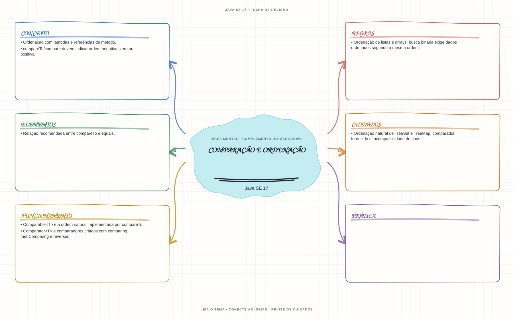

Ver mapa mental deste assuntoDefinir uma ordem natural ou externa e prever como comparadores influenciam coleções ordenadas.
Aprofundamento e revisão 1Z0-829: use esta página depois dos fundamentos. Os tópicos de prova complementam a trilha inicial e não são pré-requisitos para começar a programar.
- Leia o objetivo e localize a ideia principal no conteúdo abaixo.
- Preveja o resultado, compile e execute o exemplo.
- Faça a atividade sem copiar a solução e confira a checagem comentada.
EXEMPLO DE CONSOLE
Veja a regra em execução
Antes de executar, anote sua previsão. Compile o exemplo com o JDK e compare a saída observada com as regras deste assunto.
Comandos para compilar e executar
javac -d target/bin src/05-arrays-e-colecoes/comparacao-e-ordenacao/ComparacaoEOrdenacaoExample.java
java -cp target/bin ComparacaoEOrdenacaoExampleA execução imprime o resultado no console para você comparar com sua previsão.
Consultar código-fonte: ComparacaoEOrdenacaoExample.java
import java.util.ArrayList;
import java.util.Comparator;
import java.util.List;
public class ComparacaoEOrdenacaoExample {
private record Curso(String nome, int duracao) {
}
public static void main(String[] args) {
System.out.println("=== Comparator e ordenacao ===");
List<Curso> cursos = new ArrayList<>(List.of(
new Curso("Streams", 4),
new Curso("POO", 2),
new Curso("Generics", 4)));
Comparator<Curso> ordem = Comparator.comparingInt(Curso::duracao)
.thenComparing(Curso::nome);
cursos.sort(ordem);
System.out.println("Ordenacao principal por duracao e desempate pelo nome:");
cursos.forEach(System.out::println);
System.out.println("Comparator devolve ordem negativa, zero ou positiva ao comparar dois cursos: "
+ ordem.compare(cursos.get(0), cursos.get(1)));
}
}
PRATIQUE AGORA
Faça uma pequena alteração por conta própria
Ordene uma lista de tarefas pela descrição usando Comparator.comparing.
Concluído quando: o programa compilar, produzir o resultado esperado e você conseguir explicar a regra aplicada.
CHECAGEM RÁPIDA · Comparação e ordenação
O que significa compare(a, b) == 0 para um TreeSet?
Conferir resposta comentada
Os elementos são equivalentes segundo a ordenação; o conjunto não os mantém como elementos distintos, mesmo que equals diga o contrário.
Estude
Comparable<T>e a ordem natural implementada porcompareTo.Comparator<T>e comparadores criados comcomparing,thenComparingereversed.compareTo/comparedevem indicar ordem negativa, zero ou positiva.- Ordenação de listas e arrays; busca binária exige dados ordenados segundo a mesma ordem.
- Ordenação natural de
TreeSeteTreeMap, comparador fornecido e incompatibilidade de tipos. - Relação recomendada entre
compareToeequals. - Ordenação com lambdas e referências de método.
Prática
Ordene objetos por dois campos e teste como um comparador que retorna zero afeta a inclusão em TreeSet.
Como este capítulo se relaciona com cada exame
Fundamentos reaproveitáveis; confira versão e APIs cobradas em Java 8.
Base de estudo deste portal; confirme o mapeamento com o blueprint vigente.
Conceitos úteis; revise também Sequenced Collections no Java 21.
Orientação editorial sobre reaproveitamento do material; não representa objetivos oficiais nem garante cobertura do exame. Consulte o comparativo e as fontes da Oracle.